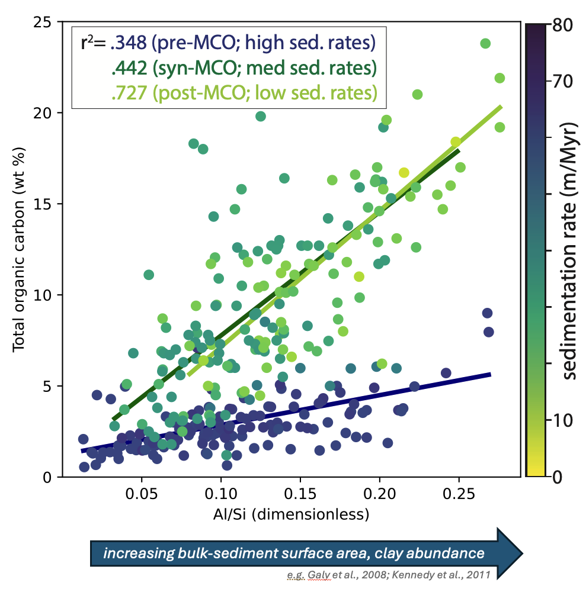

Organic carbon burial is a major pathway by which carbon is removed from the ocean-atmosphere system. Studies of modern sediments suggest that much of the organic carbon buried in margin-proximal marine basins, which host a majority of the global organic carbon burial flux, is preserved through physical protection afforded by the close association of buried organic carbon with high-specific-surface-area minerals, reactive mineral phases, and mineral aggregates. However, the dominant mechanisms of organic carbon preservation deeper in Earth history remain the subject of scientific debate, and the relationships of these preservation mechanisms with the diverse depositional conditions that can occur in marginal marine basins are unknown. In this project, I explore the relationships between organic carbon preservation, sedimentation rate, and sediment mineralogy and surface area to constrain the dominant mechanisms and primary drivers of organic carbon preservation in the geologic past.

I am currently utilizing a suite of samples from the marine, margin-proximal Monterey Formation of central California, which serves as an ideal natural laboratory for addressing outstanding questions about organic carbon burial and preservation in the stratigraphic record: organic carbon-rich shales of the Monterey Formation are intercalated with volcanic ashes that can be precisely dated with uranium-lead geochronology, allowing shale geochemical measurements to be contextualized within a high-resolution chronostratigraphic framework. Proxies for total bulk sediment surface area (Al/Si ratio, at left) exhibit a positive, sedimentation-rate dependent correlation with total organic carbon content in Monterey Formation shales from El Capitan Beach, CA. Additional geochemical data developed from these samples will be incorporated into a suite of empirical models relating organic carbon preservation mechanism to a number of depositional variables, including the distribution of time in sedimentary strata.
This project represents an avenue to improve our fundamental understanding of the drivers, rates, and magnitudes of organic carbon preservation and burial through geologic history by introducing the distribution of time as a quantifiable variable into models for organic carbon preservation, and constraining the preservation-related processes that occur in the depositional environments responsible for the majority of the global organic carbon burial flux.